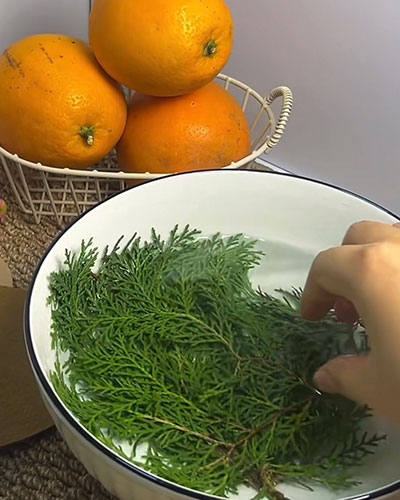
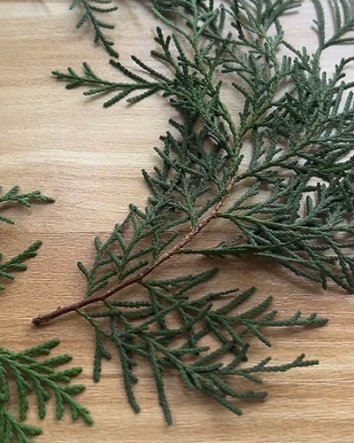
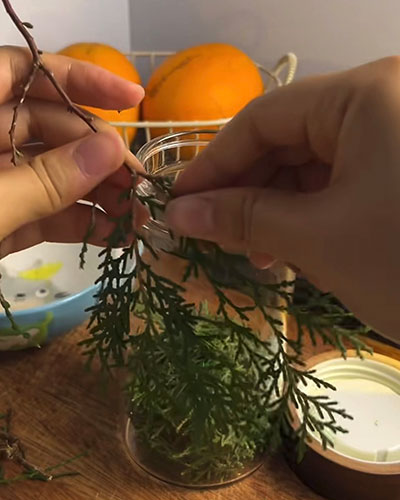
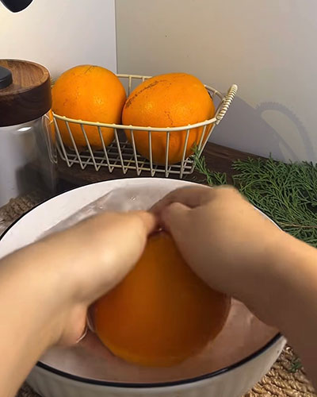
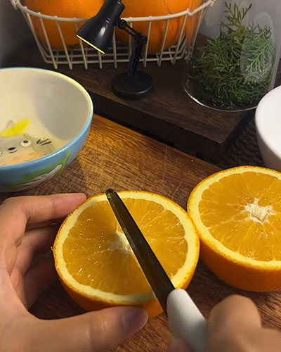
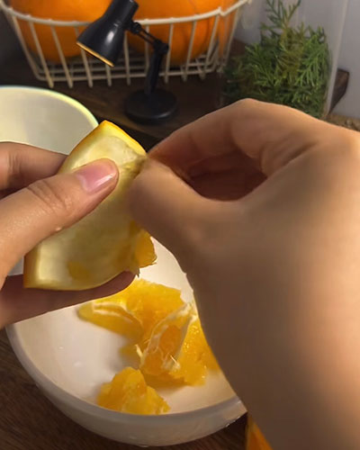
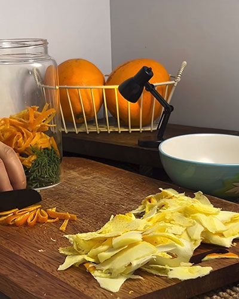
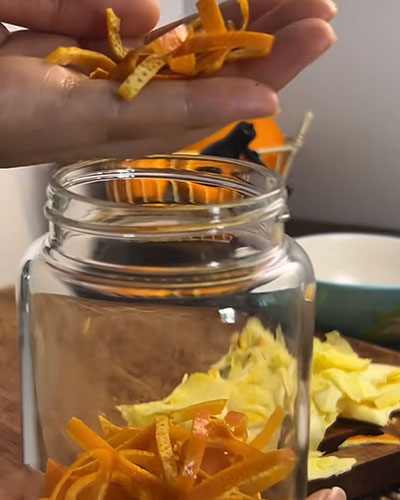
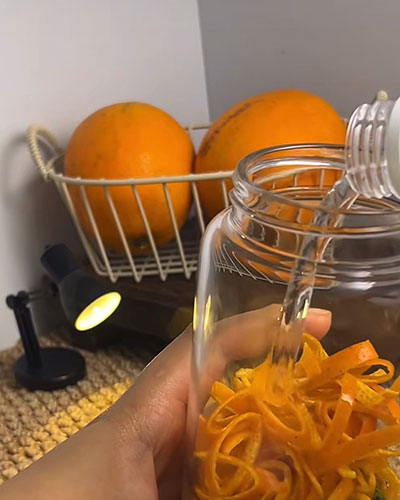
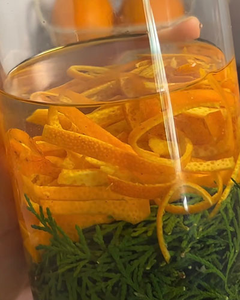
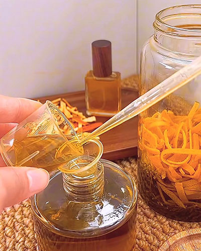
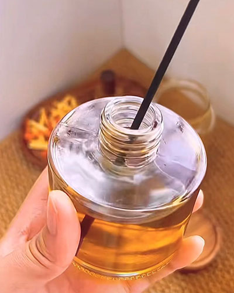
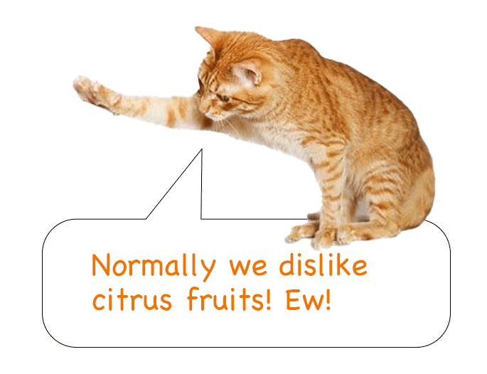
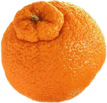
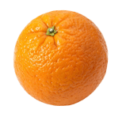
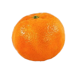
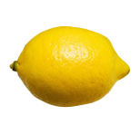
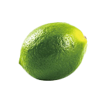
Do you know that?
Short contact with citrus fruits is usually fine for cats,
but eating them or being exposed for a long time
may lead to vomiting or toxicity.
YOU SHOULD KEEP THEM AWAY FROM THE CATS❗️